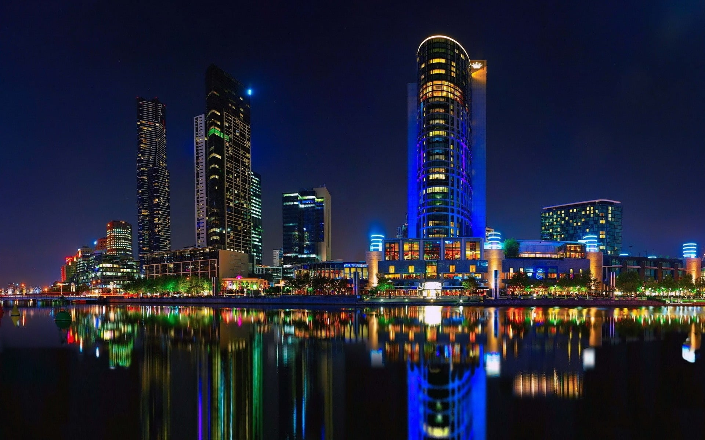
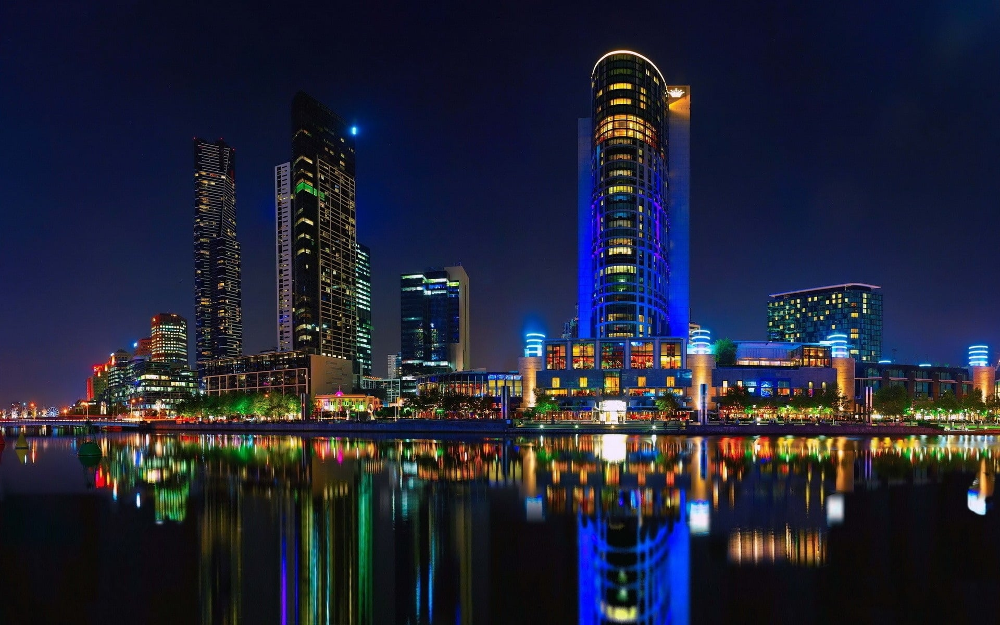

Bem-vindo à Nossa Celebração!
Nesta página, exploramos a beleza e a importância da união entre o campo e a cidade. Duas realidades distintas que se complementam e se fortalecem mutuamente, criando um tecido social e econômico vibrante. Venha descobrir como essa conexão impulsiona o desenvolvimento e a qualidade de vida de todos.
 

Acima, a tranquilidade do campo e a efervescência da cidade se encontram, ilustrando a diversidade de paisagens que compõem o nosso mundo.
O Laço Indissolúvel: Como Campo e Cidade se Sustentam
A relação entre o campo e a cidade vai muito além da simples troca de produtos. É um ciclo contínuo de sustentabilidade e inovação. O campo fornece os recursos vitais – alimentos frescos, matéria-prima para a indústria e até mesmo a água que abastece as grandes metrópoles. Em contrapartida, a cidade oferece tecnologia, serviços, educação e um mercado consumidor essencial para a economia rural. Essa interdependência é a base para o desenvolvimento de uma sociedade equilibrada e próspera, onde a diversidade de estilos de vida e as oportunidades se multiplicam.
Imagine o pão na sua mesa, a roupa que você veste ou a energia que ilumina sua casa. Quase tudo tem sua origem no campo, processado e distribuído pela cidade. Essa colaboração silenciosa, mas poderosa, garante que as necessidades de todos sejam atendidas, promovendo um crescimento mútuo e sustentável.
A Riqueza de Cada Ambiente: Contribuições Únicas
O Legado do Campo
O campo é a fonte da nossa alimentação, produzindo grãos, frutas, vegetais e proteína animal que nutrem o país. Além disso, é o guardião de biomas ricos e da biodiversidade, essencial para o equilíbrio ecológico. A vida rural promove um ritmo mais conectado à natureza, com valores como a comunidade, a simplicidade e o trabalho árduo sendo pilares. A produção de energia renovável, como a bioenergia, e o ecoturismo também são grandes contribuições do ambiente rural, oferecendo não só recursos, mas também qualidade de vida e bem-estar.
A Dinâmica da Cidade
A cidade é o polo de inovação, tecnologia e cultura. É onde as grandes ideias nascem, onde o conhecimento é disseminado através de universidades e centros de pesquisa, e onde a infraestrutura de saúde, transporte e comunicação é mais desenvolvida. A vida urbana oferece uma variedade imensa de oportunidades de emprego, acesso a serviços especializados, e uma rica vida cultural e de lazer com teatros, museus, restaurantes e eventos. A cidade também atua como um grande centro de processamento e distribuição dos produtos do campo, conectando produtores e consumidores de forma eficiente.
Campo vs. Cidade: Uma Análise Harmônica
Embora diferentes, campo e cidade oferecem experiências e contribuições únicas que se entrelaçam em nossa sociedade. Não se trata de uma competição, mas de uma complementaridade essencial.
Campo
- 🌿 Ar puro e Natureza: Conexão direta com o ambiente natural e paisagens deslumbrantes.
- 🚜 Produção de Alimentos: A base da nossa nutrição e segurança alimentar.
- 🐄 Contato com a Natureza: Oportunidade de viver um ritmo mais calmo e integrado.
- 🏡 Tranquilidade e Paz: Menos ruído, poluição e estresse do dia a dia.
- 🌾 Espaços Amplos: Liberdade e áreas para desenvolvimento agrícola e lazer ao ar livre.
- 💧 Preservação Hídrica: Importância na manutenção dos recursos de água doce.
- 🌻 Culinária Regional: Riqueza de sabores e produtos frescos locais.
Cidade
- 🏢 Oportunidades de Emprego: Diversidade de setores e carreiras profissionais.
- 🚦 Infraestrutura Avançada: Redes de transporte, saúde e comunicação eficientes.
- 🛍️ Variedade de Serviços: Comércio diversificado, hospitais e escolas de alto nível.
- 🚇 Acesso à Cultura e Lazer: Museus, teatros, shows e eventos culturais.
- 💡 Inovação e Tecnologia: Centros de pesquisa e desenvolvimento de novas soluções.
- 🌐 Conectividade Global: Facilidade de acesso a informações e comunicação.
- 🏙️ Diversidade Social: Encontro de diferentes culturas e perspectivas.